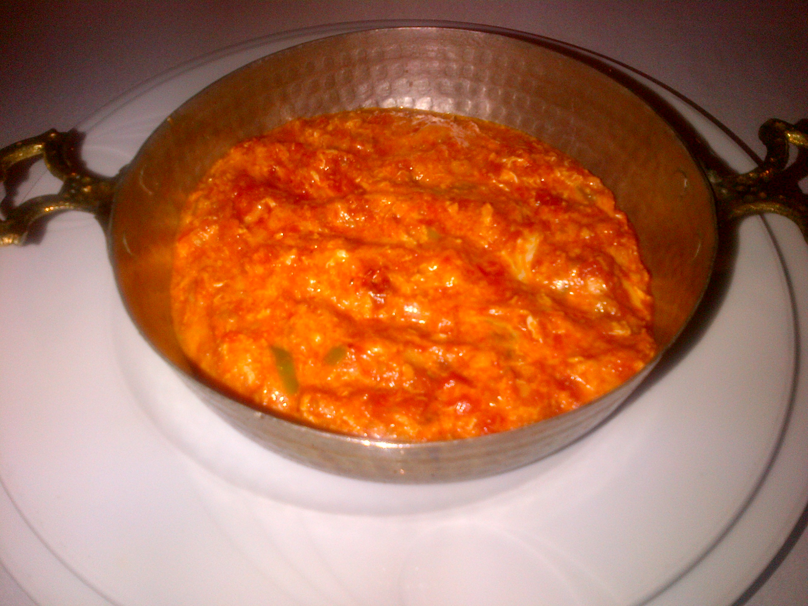

Menemen a Turkish Classic
Menemen
This recipe is from Cooking Gorgeous. Written by Ayla Clulee. You can find it here: https://cookingorgeous.com/blog/menemen-turkish-scrambled-eggs/

Photo by:E4024 from https://commons.wikimedia.org/wiki/File:Sahanda_menemen.jpg
Ingredients List
- Tomatoes
- Peppers
- Eggs
- Olive Oil
- Tomato Paste
- Seasoning
- Red Chilli or Flaked Chilli
Equipment List
- Kitchen Scale
- Sharp Knife
- Spatula
- Sahan/Pan
Directions
- Place your sahan pan (a large heavy skillet or pan would work too) on medium heat and add olive oil.
- Add the sliced green peppers and sauté for a few minutes, until slightly softened.
- Stir in the tomato paste (if using) and cook for a minute before adding the chili, chopped tomatoes, freshly ground black pepper, and salt, stir well.
- Cover the pan with a lid and let it simmer on low to medium heat for ten minutes, until the tomatoes are cooked.
- Lightly beat the eggs and add them to the tomato sauce.
- Cook the eggs gently until they start to set.
- When the eggs are just set, use a wooden spoon or a spatula to fold the tomato sauce into the eggs and mix gently.
- Remove the pan from the heat while the eggs are cooked halfway as they will continue to cook in the sauce until you serve it.
This page created as academic activity only.